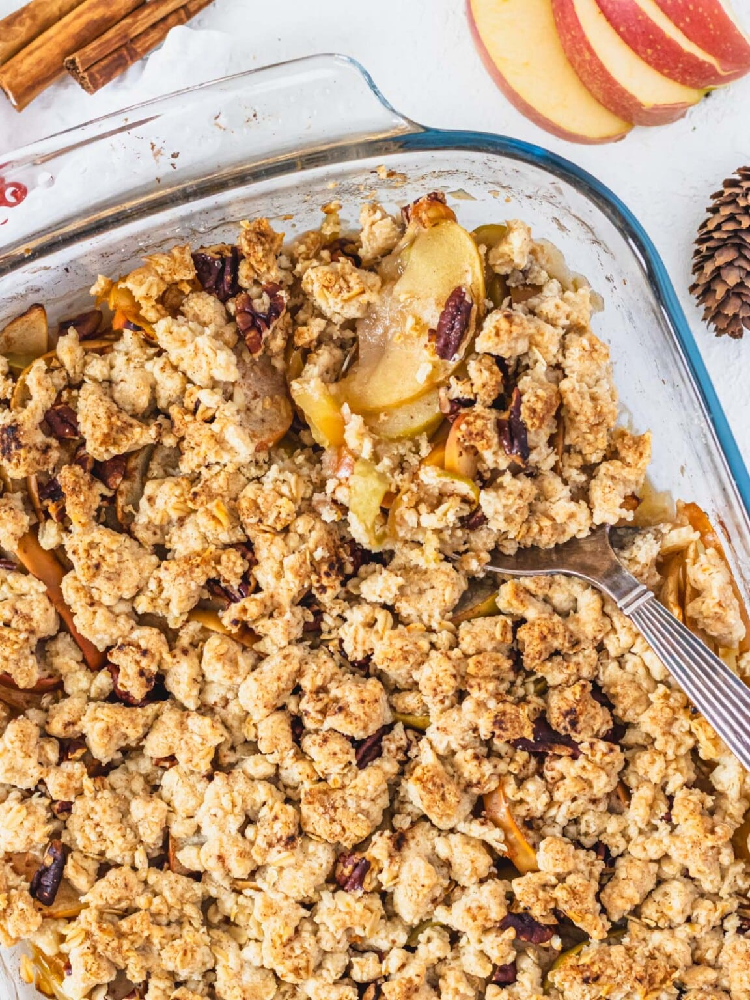

Vegan Apple Crisp

Description
From "The Plant Based School":
Vegan apple crisp is easy! You’ll love the combination of tender and moist apples, warm cinnamon and vanilla aromas, and the crispy, buttery, and nutty top.
Our easy apple crisp will impress because it is as satisfying and delicious as the apple crisp we all know and love.
You can make this recipe with simple ingredients and minimal effort. It’s perfect for a cozy everyday treat or holiday dessert alike.
Ingredients
- Apples
- Organic brown sugar
- Freshly squeezed lemon juice
- Cornstarch
- Spices and Aromas
- Cinnamon
- Grated nutmeg
- Vanilla extract
- Grated Ginger
- Salt
- Oats
- Flour
- Sugar
- Pecans
- Cinnamon
- Vegan Butter
Steps
- Preheat the oven to 350°F or 180°C. Grease a 9x13-inch (about 22 x 33 cm) oven dish with vegan butter
- Wash and cut the apples into four pieces, core them, and cut them into thin wedges with a small paring knife. Add the apple slices to a large mixing bowl.
- Add the juice of half a lemon, 2 tablespoons of brown sugar, 2 teaspoons of vanilla extract, 1 teaspoon of ground cinnamon, 1 tablespoon of cornstarch, 1/4 teaspoon of salt, 1 teaspoon of grated ginger, and a grating of nutmeg.
- Toss well until all is combined.
- Transfer the apple mixture to the prepared oven dish and push the apples down to fit snuggly.
- Top the apples with the chopped pecans. You’ll need about 1/2 cup of them.
- To a food processor, add 3/4 cup of flour, 3/4 cup of rolled oats, 1/2 cup of sugar, 1/2 teaspoon ground cinnamon, one pinch of salt, and 1/2 cup of cold diced vegan butter.
- Pulse until you get a crumbly topping with a coarse, sandy texture. You know you are done when the butter has absorbed most of the flour.
- Crumble the flour mixture on the apples, trying to cover the pecan pieces.
- Bake at 350°F or 180°C for about 45 minutes on the second lowest oven rack, below the center rack.
- You know it’s ready when the apples are tender and juicy and the crisp is golden brown.